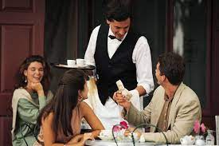

to go back to main page clickMAIN PAGE
L Resto & Bar is mordernised restaurant and bar that were found by five Rwandan people. it is locally located in Kigali (kn 123 st). it is located in 250m near convention center. It is well known for its smartness and well structured services.
Through this link you can view our rstaurant and bar services where you can order what you want and we prepare for you right away
.click service and have alook at our services Services



to go back to main page clickMAIN PAGE